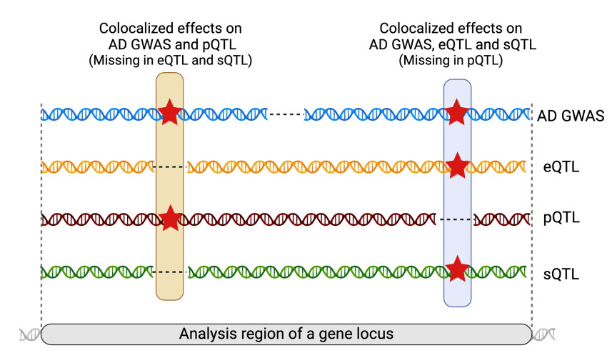
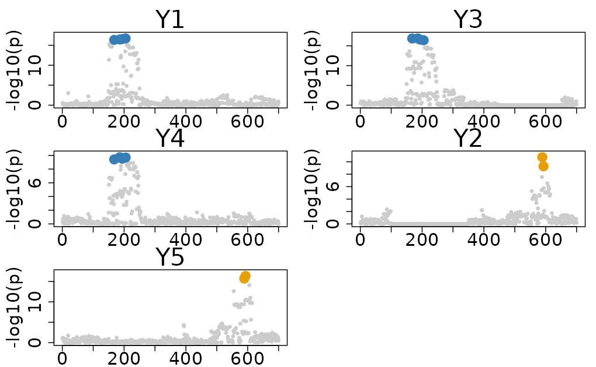
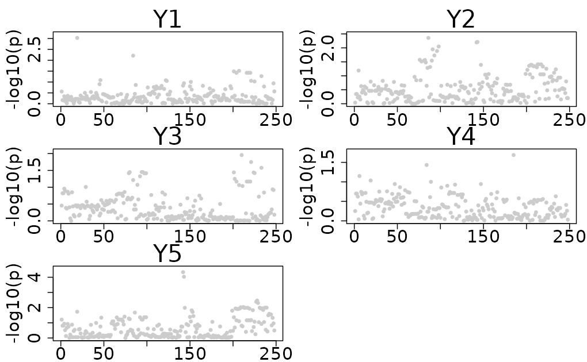
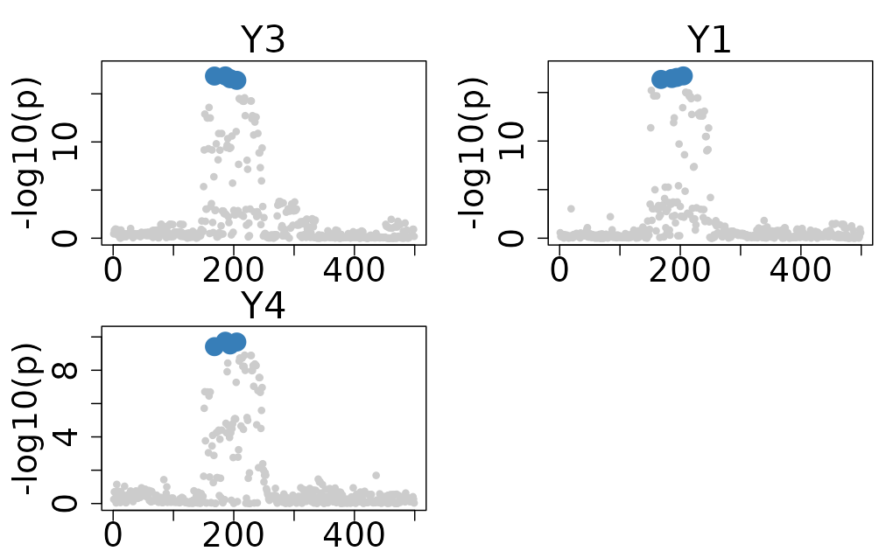

Handling Partial Overlapping Variants across Traits in ColocBoost
Source:vignettes/Partial_Overlap_Variants.Rmd
Partial_Overlap_Variants.RmdThis vignette demonstrates how ColocBoost handles partial overlapping variants across traits in ColocBoost.

Causal variant structure
We create an example data from Ind_5traits with two
causal variants, 644 and 2289, but each of them is only partially
overlapping across traits.
- Causal variant 194 is associated with traits 1, 3, and 4, but is missing in trait 2.
- Causal variant 589 is associated with traits 2 and 3, but is missing in trait 5.
This structure creates a realistic scenario in which multiple traits from different datasets are not fully overlapping, and the causal variants are not shared across all traits.
# Load example data
data(Ind_5traits)
X <- Ind_5traits$X
Y <- Ind_5traits$Y
# Create causal variants with potentially LD proxies
causal_1 <- c(100:350)
causal_2 <- c(450:650)
# Create missing data
X[[2]] <- X[[2]][, -causal_1, drop = FALSE]
X[[3]] <- X[[3]][, -causal_2, drop = FALSE]
# Show format
X[[2]][1:2, 1:6]
#> rs_1 rs_2 rs_3 rs_4 rs_5 rs_6
#> sample_1 0.6197206 1.064107 1.064107 1.103145 -0.3373669 -0.3919608
#> sample_2 0.6197206 1.064107 1.064107 1.103145 -0.3373669 -0.3919608
X[[3]][1:2, 1:6]
#> rs_1 rs_2 rs_3 rs_4 rs_5 rs_6
#> sample_1 0.6197206 1.064107 1.064107 1.103145 -0.3373669 -0.3919608
#> sample_2 0.6197206 1.064107 1.064107 1.103145 -0.3373669 -0.39196081. Run ColocBoost with partial overlapping variants
To run ColocBoost on different genotypes with different causal
variants, the variant names should be provided as the column names of
the X matrices. Otherwise, the colocboost
function will not be able to identify the variants correctly from
different genotype matrices, and the analysis will fail with the error
message
Please verify the variable names across different outcomes.
# Run colocboost
res <- colocboost(X = X, Y = Y)
#> Validating input data.
#> Starting gradient boosting algorithm.
#> Gradient boosting for outcome 4 converged after 26 iterations!
#> Gradient boosting for outcome 3 converged after 50 iterations!
#> Gradient boosting for outcome 2 converged after 51 iterations!
#> Gradient boosting for outcome 1 converged after 53 iterations!
#> Gradient boosting for outcome 5 converged after 60 iterations!
#> Performing inference on colocalization events.
#> Extracting colocalization results with pvalue_cutoff = 0.001, cos_npc_cutoff = 0.2, and npc_outcome_cutoff = 0.2.
#> Keep only CoS with cos_npc >= 0.2. For each CoS, keep the outcomes configurations that pvalue of variants for the outcome < 0.001 and npc_outcome >0.2.
# The number of variants in the analysis
res$data_info$n_variables
#> [1] 700
# Plotting the results
colocboost_plot(res)
2. Limitations of using only overlapping variables
If we perform a colocalization analysis using only overlapping variables, we may fail to detect any colocalization events. This is because the causal variants, which are only partially overlapping across traits, are excluded during the preprocessing step. As a result, even though these variants are associated with some traits, they are removed from the analysis, leading to a loss of critical information. This highlights the importance of handling partial overlaps effectively to ensure that meaningful colocalization signals are not missed.
# Run colocboost with only overlapping variables
res <- colocboost(X = X, Y = Y, overlap_variables = TRUE)
#> Validating input data.
#> Starting gradient boosting algorithm.
#> Using multiple testing correction method: lfdr. Outcome 4 for all variants are greater than 1. Will not update it!
#> Gradient boosting for outcome 1 converged after 2 iterations!
#> Gradient boosting for outcome 3 converged after 9 iterations!
#> Gradient boosting for outcome 2 converged after 12 iterations!
#> Gradient boosting for outcome 5 converged after 21 iterations!
#> Performing inference on colocalization events.
#> No colocalization results in this region!
# The number of variants in the analysis
res$data_info$n_variables
#> [1] 248
# Plotting the results
colocboost_plot(res)
#> Warning in get_input_plot(cb_output, plot_cos_idx = plot_cos_idx, variant_coord
#> = variant_coord, : No colocalized effects in this region!
#> There is no colocalization in this region!. Showing margianl for all outcomes!
3. Disease-prioritized colocalization analysis with variables in the focal trait
In disease-prioritized colocalization analysis with a focal trait,
ColocBoost recommends prioritizing variants in the focal
trait as the default setting. For the example above, if we consider
trait 3 as the focal trait, only variants present in trait 3 will be
included in the analysis. This ensures that the analysis focuses on
variants relevant to the focal trait while also accounting for partial
overlaps across other traits. If you want to include all variants across
traits, you can set focal_outcome_variables = FALSE to
override this default behavior.
# Run colocboost
res <- colocboost(X = X, Y = Y, focal_outcome_idx = 3)
#> Validating input data.
#> Starting gradient boosting algorithm.
#> Gradient boosting for outcome 4 converged after 17 iterations!
#> Gradient boosting for outcome 1 converged after 27 iterations!
#> Gradient boosting for focal outcome 3 converged after 39 iterations!
#> Gradient boosting for outcome 2 converged after 49 iterations!
#> Gradient boosting for outcome 5 converged after 53 iterations!
#> Performing inference on colocalization events.
#> Extracting colocalization results with pvalue_cutoff = 0.001, cos_npc_cutoff = 0.2, and npc_outcome_cutoff = 0.2.
#> Keep only CoS with cos_npc >= 0.2. For each CoS, keep the outcomes configurations that pvalue of variants for the outcome < 0.001 and npc_outcome >0.2.
# The number of variants in the analysis
res$data_info$n_variables
#> [1] 499
# Plotting the results
colocboost_plot(res)